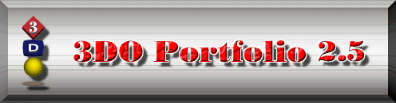

Welcome to the Portfolio programmer's guide and reference documentation.
This page contains links to all of the documentation necessary to program the Portfolio system, graphics, audio, and music. Click on any of the links below to jump to information on a particular topic.
 Programming 3DO Music and Audio
Programming 3DO Music and Audio Programming 3DO Graphics
Programming 3DO Graphics